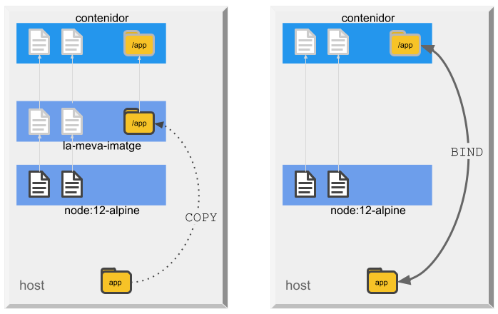
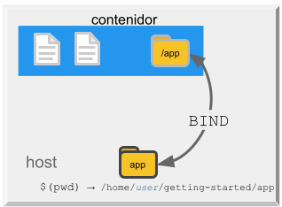
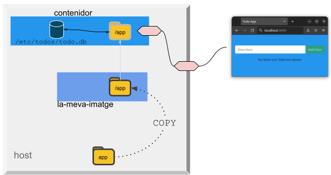
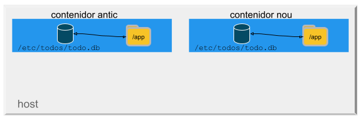
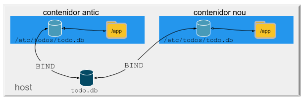
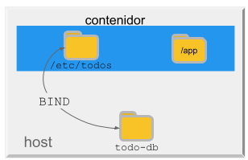
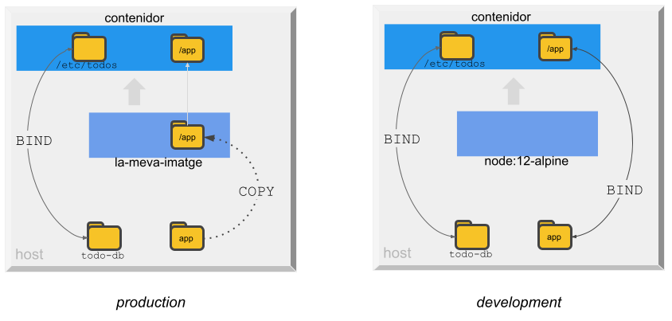
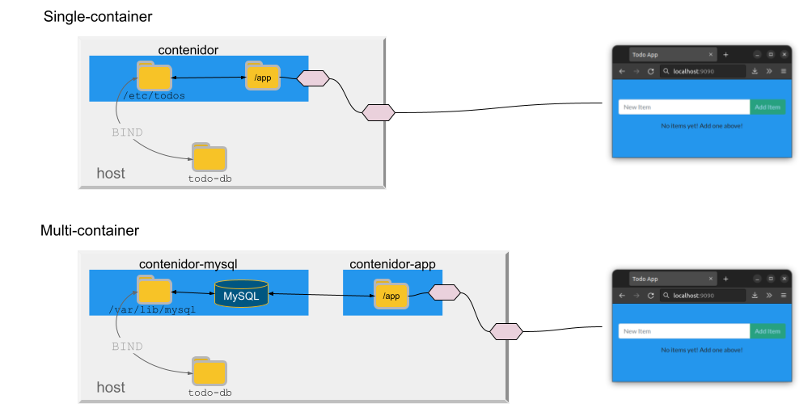

<!--meta {urls: [asix/m8/uf2], tags: [docker]}-->

<meta charset="utf-8">
<meta name="viewport" content="width=device-width, initial-scale=1">
<script src="https://cdn.jsdelivr.net/npm/clipboard@2.0.6/dist/clipboard.min.js"></script>
<script type="module" src="/sofi/js/script.js"></script>
<link rel="stylesheet" href="/sofi/css/estil.css">

<nav></nav>
<header>
    <h1>Docker</h1>
</header>

<section>

   <h2>Instal·lació</h2>
   <host>root@host</host>
   <shell>
       curl -fsSL https://get.docker.com -o get-docker.sh && sh get-docker.sh
   </shell>

   <p>Configuració per a executar Docker com a usuari no-root:</p>
   <host>root@host</host>
   <shell>
       usermod -aG docker $USER
   </shell>

   <host>user@host</host>
   <shell>
       newgrp docker
   </shell>

   <ul>
    <!--
       <li>
        <p>docker-compose</p>
        <host>root@host</host>
        <shell>
            curl -L "https://github.com/docker/compose/releases/download/$(curl -s https://api.github.com/repos/docker/compose/releases/latest | grep -oP '"tag_name": "\K(.*)(?=")')/docker-compose-$(uname -s)-$(uname -m)" -o /usr/local/bin/docker-compose && chmod +x /usr/local/bin/docker-compose
        </shell>     
       </li>
       -->
   </ul>

   <h2>Referència</h2>
   <h3>docker</h3>
   <a href="https://docs.docker.com/engine/reference/commandline/cli/">Use Docker command line</a>

   <ul>
    <li>docker run</li>
    <li>docker image
        <ul>
            <li>build</li>
            <li>ls</li>
            <li>rm / prune</li>
        </ul>
    </li>
    <li>docker container
        <ul>
            <li>ls</li>
            <li>exec</li>
            <li>logs</li>
            <li>rm / prune</li>
            <li>start / stop / restart</li>

        </ul>
    </li>
    <li>docker volume
        <ul>
            <li>create</li>
            <li>inspect</li>
            <li>ls</li>
            <li>rm / prune</li>
        </ul>
    </li>
    <li>docker ps</li>
    <li>docker compose
        <ul>
            <li>up / down</li>
            <li>logs</li>
            <li>ps</li>
            <li>start / stop / restart</li>
        </ul>
    </li>
   </ul>

   <h3>Dockerfile</h3>
   <a href="https://docs.docker.com/engine/reference/builder/">Dockerfile reference</a>
   <ul>
    <li>FROM</li>
    <li>RUN</li>
    <li>CMD</li>
    <li>ADD / COPY</li>
    <li>USER</li>
    <li>WORKDIR</li>
   </ul>

   <h3>docker-compose</h3>
   <a href="https://docs.docker.com/compose/compose-file/compose-file-v3/">compose-file-v3</a>

   <ul>
        <li>build</li>
        <li>command</li>
        <li>configs</li>
        <li>depends_on</li>
        <li>entrypoint</li>
        <li>environment</li>
        <li>image</li>
        <li>networks</li>
        <li>ports</li>
        <li>secrets</li>
        <li>volumes</li>
   </ul>
</section>

<section>
    <h2>Contenidors</h2>

    <h4>Què és un contenidor?</h4>
    <p>Simply put, a container is a sandboxed process on your machine that is isolated from all other processes on the host machine. That isolation leverages kernel namespaces and cgroups, features that have been in Linux for a long time. Docker has worked to make these capabilities approachable and easy to use. To summarize, a container:
    
    <ul>
        <li>is a runnable instance of an image. You can create, start, stop, move, or delete a container using the DockerAPI or CLI.
        <li>can be run on local machines, virtual machines or deployed to the cloud.
        <li>is portable (can be run on any OS).
        <li>is isolated from other containers and runs its own software, binaries, and configurations.
    </ul>

    <h4>Què és una imatge?</h4>
    <p>When running a container, it uses an isolated filesystem. This custom filesystem is provided by a container image. Since the image contains the container's filesystem, it must contain everything needed to run an application - all dependencies, configurations, scripts, binaries, etc. The image also contains other configuration for the container, such as environment variables, a default command to run, and other metadata.

    


    <h4>Contenidor vs Màquina Virtual</h4>
    

    <h4>Imatge vs contenidor</h4>
    

    <h4>Container images</h4>
    

    <h4>Chroot</h4>
    

</section>

<section>
    <h2>Getting started</h2>

    <p>En el següent tutorial posarem en funcionament una aplicació-web senzilla que consisteix en una TODO-APP (llista de tasques).</p>

    <info>
    <p>Pots trobar el codi de l'aplicació aquí: <a href="https://github.com/docker/getting-started">https://github.com/docker/getting-started</a></p>
    <p>La imatge docker amb l'aplicació és aquesta: <a href="https://hub.docker.com/r/gerardfp/todo-app">https://hub.docker.com/r/gerardfp/todo-app</a></p>
    <p>Aquest tutorial està extret de <a href="https://docs.docker.com/get-started/">https://docs.docker.com/get-started/</a></p>
    </info>

    <h3>Comencem!</h3>
    <p>Executa la següent comanda al terminal:</p>

    <shell>
        docker run -d -p 7070:3000 gerardfp/todo-app
    </shell>

    <p>Adona't que s'han utilitzat algunes <em>flags</em>. Aquí tens alguna info d'elles:</p>

    <ul>
        <li><wt>-d</wt> - Executa el contenidor en mode <em>detached</em> (en segon pla). Açò permet seguir fent altres comandes al mateix terminal, sense necessitat d'obrir-ne un altre.</li>
        <li><wt>-p 7070:3000</wt> - Mapeja el port 7070 del <strong>host</strong> amb el port 3000 del <strong>contenidor</strong>. Ara pots accedir a l'aplicació a través de la URL <a href="http://localhost:7070">http://localhost:7070</a>.</li>
        <li><wt>gerardfp/todo-app</wt> - Especifica la imatge a utilitzar. (Docker descarrega automàticament les imagtges de (DockerHub)</li>
    </ul>

    <p>I així, amb una sola comanda, ja tenim l'aplicació web en funcionament! 💪</p>
    

    <p>Ja està, executar un contenidor Docker es tan fàcil com això. Però ara bé, hem executat un contenidor a partir d'una imatge ja feta que contenia l'aplicació, però... 
        què passa si volem modificar l'aplicació? Haurem d'aprendre primer a fer imatges amb les nostres aplicacions...</p>

    <h3>Construir imatges</h3>

    <p>Per a construir la nostra imatge agafarem el codi de l'aplicació d'exemple, el modificarem un poquet, i després construirem la imatge.</p>

    <h4>Obté el codi de l'aplicació d'exemple:</h4>
    <p>Normalment per obtenir qualsevol codi font clonarem un repositori git:</p>
    <shell>git clone https://github.com/docker/getting-started</shell>

    <p>Observa que s'ha creat la carpeta <w>getting-started</w> amb tot el contingut del repositori. 
        De tot aquest contingut ens interessa la carpeta <w>app</w>, que és on es troba el codi font de l'aplicació.</p>

    <p>Obre la carpeta <w>app</w> amb l'editor que preferisques, per exemple el Visual Studio Code. Un cop obert hauries de veure aquest contingut:</p>
    

    <p>Ara farem una xicoteta modificació a l'aplicació. Podem canviar per exemple el color de fons, i podríem posar el color blau corporatiu de 
        Docker: <w><span style="color:#2496ed">█</span> #2496ed</w>. Per fer-ho has de modificar l'arxiu <w>src/static/css/styles.css</w>:</p>

    <scfile>src/static/css/styles.css</scfile>
    <sc css>
        <low>
        body {
        </low>
            <add>background-color: #2496ed;</add>
        <low>
            margin-top: 50px;
            font-family: 'Lato';
        }
        </low>
    </sc>

    


    <h4>Construir la nova imatge</h4>
    <p>Per a poder construir (<em>build</em>) una imatge, necessitem un arxiu <w>Dockerfile</w>. Un arxiu Dockerfile és simplement un script de text amb 
    les instruccions per a construir una imatge. Construirem una imatge senzilla amb la nostra aplicació:</p>

    <ol>
        <li><p>En la carpeta <w>app</w>, crea un arxiu anomenat <w>Dockerfile</w> amb el següent contingut:</p>
            <scfile>app/Dockerfile</scfile>
            <sc docker>
                FROM node:12-alpine
                WORKDIR /app
                COPY . .
                RUN yarn install --production
                CMD ["node", "src/index.js"]
            </sc>

            
        </li>
        <li>
            <p>Al terminal, ves a la carpeta <w>app</w>. I construeix la imatge amb la comanda <w>docker build</w>.</p>
            <shell>
                docker build -t la-meva-imatge .
            </shell>
            <p>Aquesta commanda ha utilitzat l'arxiu Dockerfile per a construir una nova imatge. Segurament t'hauràs adonat de que s'han descarregat
                un munt de "layers". Això és perquè li hem dit a docker que volem començar a partir de la imatge <w>node:12-alpine</w>. Però, degut a que 
                no la teníem al nostre ordinador, era necessari descarregar aquesta imatge (i les imatges de la qual aquesta depén...🌀).
            </p>
            <p>Un cop la imatge <w>node:12-alpine</w> s'ha descarregat, hem copiat la nostra aplicació (la carpeta <w>app</w>) i hem utilitzat <w>yarn</w> per 
                a instal·lar les dependències de l'aplicació. La directiva <w>CMD</w> especifica la comanda que s'ha d'executar quan s'inicia un contenidor 
                a partir d'aquesta imatge.</p>
            <p>Finalment, el flag <w>-t</w> posa una etiqueta (<em>tag</em>) a la nostra imatge. És com posar-li un nom. Ja que li hem posat el nom 
                <w>la-meva-imatge</w>,
            ens podem referir a aquesta imatge quan iniciem un contenidor a partir d'ella.</p>

            <p>El <w>.</w> al final de la comanda <w>docker build</w> li diu a docker que ha de buscar l'arxiu <w>Dockerfile</w> al directori actual 
                en què ens trobem.</p>
            
            
        </li>
    </ol>

    <h3>Iniciar un contenidor</h3>

    <p>Ara que ja tenim la imatge podem inicar un contenidor que la utilitzi com a base. Per fer-ho, utilitzarem la comanda <w>docker run</w> (tal com hem fet abans).</p>

    <ol>
        <li><p>Inicia el contenidor amb la comanda <w>docker run</w> tot especificant el nom de la imatge que tot just hem creat:</p>
            <shell>
                docker run -dp 9090:3000 la-meva-imatge
            </shell>
            <p>Recordes les <em>flags</em> <w>-d</w> i <w>-p</w>? Estem iniciant el contenidor en mode <em>detached</em> (segon plà) i hem mapejat el port 9090 del host
            amb el port 3000 del contenidor.</p>
        </li>
        <li>
            <p>En uns segons, obre el navegador web i ves a <a href="http://localhost:9090">http://localhost:9090</a>. Hauries de veure l'app (en color blau de fons!)</p>
            
        </li>
    </ol>

    <p>Així doncs, ja tenim en marxa el contenidor que utilitza la nostra imatge i que té mapejat el port 3000 amb el port 9090 del host. I és a través d'aquest 
        port 9090 mitjançant el qual accedim a l'aplicació web.</p>

        

    <h3>Reemplaçar un contenidor</h3>
    <p>Com hem vist, eś molt senzill crear una nova imatge (amb <w>docker build</w>) i iniciar un contenidor que la utilitzi com a base (amb <w>docker run</w>).</p>

    <p>Imagina que ara ens demanen fer meś canvis a l'aplicació. Per exemple, modificar el text que apareix com a <em>placeholder</em> en el camp de text, 
        <name>New Item</name>, i canviar-lo per <name>Item title</name>.</p>

    

    <p>Molt senzill, anem a canviar aquest text.</p>

    <ol>
        <li>
            <p>A l'arxiu <w>src/static/js/app.js</w>, modifica la línia 99 i canvia el text:</p>
            <scfile>src/static/js/app.js</scfile>
            <sc html>
                <rem>
                    placeholder="New Item"
                </rem>
                <add>
                    placeholder="Item title"
                </add>
            </sc>
        </li>
        <li>
            <p>Construïm una nova versió de la imatge, utilitzant la mateixa comanda que abans:</p>
            <shell>
                docker build -t la-meva-imatge .
            </shell>
        </li>
        <li>
            <p>Iniciem un nou contenidor que utilitze la imatge actualitzada.</p>
            <shell>
                docker run -dp 9090:3000 la-meva-imatge
            </shell>
            <p>¡Oh, noooo! 😱 Probablement vegis un error semblant a aquest:</p>

            <shell>
                docker: Error response from daemon: driver failed programming external connectivity on endpoint silly_yonath <br>(3829d660f4d8b29a93636704d71dca641fe5d498af64d50287d2439621becd8b):<br>Bind for 0.0.0.0:9090 failed: port is already allocated
            </shell>

            <p>Què ha passat? No s'ha pogut iniciar el nou contenidor degut a que el contenidor antic encara està en marxa. És degut a que el nou contenidor vol 
                utilitzar el mateix port del host, el 9090, i únicament un procés pot utilitzar un mateix port a la vegada. 
            </p>

            

            <p>Per a corregir l'error tenim dues opcions: canviar el 
                port que utilitza el nou contenidor, o esborrar el contenidor antic.</p>

            <optional>
                <p>Provem a canviar el port que utilitza el nou contenidor.</p>

                <p>Llança el nou contenidor amb un mapeig de ports diferent:</p>

                <shell>
                    docker run -dp 5678:3000 la-meva-imatge
                </shell>

                <p>Ara el contenidor s'ha d'haver iniciat correctament i hauríem de poder accedir a l'aplicació a <a href="http://localhost:5678">http://localhost:5678</a>.</p>
                <p>I naturalment, l'antic contenidor encara està en funcionament, i seguirem veient l'antiga app a <a href="http://localhost:9090">http://localhost:9090</a>.</p>
                <p>És més, segurament encara tinguis engegat el primer contenidor que hem llançat a l'inici de tot, el que tenia el fons gris (<a href="http://localhost:7070">http://localhost:7070</a>)</p>
            
                
            </optional>
        </li>
    </ol>

    <h4>Reemplaçar l'antic contenidor per el nou</h4>

    <p>Com hauràs endevinat, no és plan d'anar iniciant contenidors nous en ports diferents. Serà més convenient eliminar els contenidors antics i reutilitzar el
        mateix port.
    </p>

    <ol>
        <li>
            <p>Per a eliminar els contenidors primer cal esbrinar el seu nom. (Aquest nom és diferent al nom de la imatge <w>la-meva-imatge</w>). Degut a que 
            no hem posat cap nom al contenidor, docker n'ha generat un d'aleatori. Per a obtenir els noms dels contenidors podem usar <w>docker ps</w>:</p>

            <shell>
                docker ps
            </shell>

            <p>Ens donarà una informació semblant a aquesta, amb el nom dels contenidors a l'última columna:</p>
            <shell>
CONTAINER ID  IMAGE              COMMAND          STATUS     PORTS                   NAMES
60af742f64ee  la-meva-imatge     "docker-entry…"  Up 1 hour  0.0.0.0:5678->3000/tcp  beautiful_clint
9e196d4f2b55  la-meva-imatge     "docker-entry…"  Up 1 hour  0.0.0.0:9090->3000/tcp  relaxed_lumiere
d7e628fe0ca9  gerardfp/todo-app  "docker-entry…"  Up 1 hour  0.0.0.0:7070->3000/tcp  mystifying_boyd
            </shell>
        </li>
        <li>
            <p>Utilitza la comanda <w>docker rm -f &lt;NAME&gt;</w> per a eliminar els contenidors</p>

            <shell>
                docker rm -f beautiful_clint
                docker rm -f relaxed_lumiere
                docker rm -f mystifying_boyd
            </shell>
        </li>
        <li>
            <p>Ara ja pots iniciar un nou contenidor al port 9090 amb la nova imatge:</p>
            <shell>
                docker run -dp 9090:3000 la-meva-imatge
            </shell>
        </li>
    </ol>

    <h3>Utilitzar bind mounts</h3>
    <p>Com pots intuir, aquest procés de construir i reemplaçar un contenidor, no és el més còmode quan estem desenvolupant una app.
        A cada petit canvi que fem no podem estar reconstruint i reemplaçant el contenidor.
    </p>
    <p>Incloure el codi font en la <strong>imatge</strong> és adequat quan tenim la app finalitzada i llesta per a llançar. Però en mode
        desenvolupador tenim l'alternativa d'enllaçar dintre del <strong>contenidor</strong> el codi font de l'aplicació.</p>

    <p>És a dir, tenim l'opció de <u>copiar la app a la imatge</u>, o bé <u>enllaçar la app al contenidor</u>.</p>    

    

    <p>Així doncs, per a iniciar el contenidor en mode development, farem el següent:</p>
    <ul>
        <li>Enllaçarem el codi font a dintre del contenidor</li>
        <li>Instal·larem les dependencies dintre del contenidor</li>
    </ul>

    <p>Com pots veure, no serà necessari fer el build de cap imatge. Simplement llançarem el contenidor a partir de la imatge <w>node:12-alpine</w>.</p>

    <p>Fem-ho!</p>

    <p>Comprova que al host estàs en la carpeta <w>app</w> (pots fer-ho amb la comanda <w>pwd</w>) i inicia el contenidor amb:</p>
    <shell>
        docker run   -dp 3030:3000   -v "$(pwd):/app"   -w /app    node:12-alpine    sh -c "yarn install && yarn run dev"
    </shell>

    <ul>
        <li><p><wt>-dp 3030:3000</wt> - igual que abans. Iniciar en mode <em>detached</em> i mapejar el port 3030 del host amb el 3000 del contenidor.</p></li>
        <li><p><wt>-v "$(pwd):/app"</wt> - realitza el <strong>bind mount</strong> entre el directori actual del host i el directori <w>/app</w> del contenidor.</p>
            

        </li>
        <li><p><wt>-w /app</wt> - estableix el <w>working directory</w>, o directori actual, dintre del contenidor. És a dir, quan s'inicie el contenidor 
        es farà un <w>cd /app</w> i la comanda s'executarà des d'aquest directori</p>
        </li>
        <li><p><wt>node:12-alpine</wt> - la imatge a utilitzar</p></li>
        <li><p><wt>sh -c "yarn install && yarn run dev"</wt> - la comanda a executar quan s'inicie el contenidor. Aquesta comanda instal·la les dependències de 
        la app i després posa l'app en marxa.</p> </li>
    </ul>

    <p><strong>Ara el directori <w>app</w> del host i el directori <w>app</w> del contenidor estàn enllaçats. Quan hi hagi algun canvi en algun arxiu del directori 
        <w>app</w> del host, es veurà reflexat al contenidor, i viceversa, quan al contenidor es canvïi alguna cosa del directori <w>app</w> també es canviarà
        al host.</strong>
    </p>
    <p>
        De fet, si observes el directori <w>app</w> al host, veuràs que ha aparegut una carpeta nova <w>node_modules</w>. Aquesta carpeta l'ha creat el contenidor
        amb la comanda <w>yarn install</w>. Aquí hi han totes les dependències (llibreries) que necessita l'app per a funcionar. 
    </p>

    <p>Veiem com si fem algun canvi a la carpeta <w>app</w> del host, aquest canvis es reflexen al contenidor (és el que ens convé per al mode development 😎):</p>
    <p>Go ahead i fes un canvi al codi de l'aplicació al visual studio. Obre per exemple l'arxiu <w>styles.css</w>, i canvia colors o whatever you want. Recarrega 
    navegador i veuràs com els canvis es veuen al moment. 🎉🎉🎉</p>

    <p>Un cop hauríem acabat de desenvolupar l'apliació, només hauríem de tornar a fer un <w>docker build</w>, i generar luna imatge amb la nostra 
        app llesta per a llançar a producció. 🎀</p>

    <shell>
        docker build -t la-meva-imatge .
    </shell>

    <h4>Volumes</h4>

    <p>Imagina aquesta situació: tens la teva app en producció, és a dir, has fet una imatge amb la teva app i has llançat un contenidor a partir d'aquesta imatge.
        La teva app és un èxit i la utilitza la gent per a guardar les seves tasques. </p>
    <p>Aquesta app utilitza la base de dades <a href="https://www.sqlite.org">SQLite</a> per a guardar les tasques. Les dades es guarden a l'arxiu 
        <w>/etc/todos/todo.db</w>:</p>
    
        
        
    <p>En un moment donat, vols realitar alguna actualització a la app. Fàcil, fas el canvi al codi i després crees una nova imatge amb la app actualitzada.
        Però, quan inicies un nou contenidor amb la nova app... sorpresa! 😨, les tasques que hi havia a l'arxiu de la base de dades no aparèixen a l'aplicació. És lògic,
        ja que cada contenidor té el seu propi arxiu <w>todo.db</w>, i les tasques antigues s'han quedat al contenidor antic: 
    </p>

    

    <p>Per a solucionar açò podríem fer un <em>bind mount</em> entre els arxius <w>todo.db</w> dels contenidors i un arxiu <w>todo.db</w> del host. De forma que els 
    canvis que es realitzin en un contenidor es reflexin en el l'arxiu del host. Els dos contenidors estarien utilitzant el mateix arxiu <w>todo.db</w>, i inclús 
    podríem eliminar contenidors sense perdre aquest arxiu.</p>

    

    <p>Per fer açò només hauríem d'escollir en quina carpeta del host guardem aquest arxiu <w>todo.db</w>. Podríem posar-lo a la mateixa carpeta <w>app</w>, o a
    l'escriptori, o documents... ¿quin escollir?</p>
    <p>Per a aquest casos el mateix docker ofereix la possibilitat de crear un directori on guardar aquests arxius. Aquests directoris s'anomenen <strong>volumes</strong>.</p>

    <p>Un <strong>volume</strong> és un directori creat per docker al qual li pots asignar un nom, i utilitzar-lo després per a fer un <em>bind mount</em> als contenidors.</p>


    <p>Afegim un volum al nostre contenidor:</p>

    <ol>
        <li>
            <p>Crea un <em>volume</em> amb la comanda <w>docker volume create</w>:</p>

            <shell>
                docker volume create todo-db
            </shell>
        </li>
        <li>
            <p>Atura els contenidors que hem posat abans en funcionament. Primer esbrina el seu nom amb <w>docker ps</w> i després elimina'ls amb 
            <w>docker rm -f &ltcontainer-name&gt;</w>.</p>
        </li>
        <li>
            <p>Inicia un nou contenidor a partir de la imatge <w>la-meva-imatge</w>, però afegint el <em>flag</em> <w>-v</w> per a especificar
            el muntatge del volum. Utilitzarem el volum <w>todo-db</w> que acabem de crear i el muntarem a la carpeta <w>/etc/todos</w> del contenidor.
            D'aquesta forma, l'arxiu del contenidor <w>/etc/todos/todo.db</w> on es guarden totes les tasques que creen els usuaris, es guardarà a la 
            carpeta del host que està associada amb el volum <w>todo-db</w>.</p>
            <shell>
                docker run   -dp 3003:3000   -v todo-db:/etc/todos   la-meva-imatge
            </shell>

            
        </li>
        <li>
            <p>Quan el contenidor s'acabi d'iniciar, obri la app i afegeix algunes tasques: <a href="http://localhost:3003">http://localhost:3003</a></p>
        </li>
        <li>
            <p>Prova a tornar a eliminar el contenidor amb <w>docker rm -f</w> i a tornar-lo a iniciar. Veuràs que les tasques han persistit.</p>
        </li>
    </ol>

    <p>Per veure exactament la localització de la carpeta associada a un volum, pots utilitzar la comanda <w>docker volume inspect</w>:</p>

    <shell>
        docker volume inspect todo-db
    </shell>
    <shell>
        [
            {
                "CreatedAt": "2022-10-23T10:38:27+02:00",
                "Driver": "local",
                "Labels": {},
                "Mountpoint": "/var/lib/docker/volumes/todo-db/_data",
                "Name": "todo-db",
                "Options": {},
                "Scope": "local"
            }
        ]
    </shell>
    <p>El <w>Mountpoint</w> és efectivament la carpeta en la que es guarden les dades</p>


    <h3>Docker Compose</h3>

    <p>Llançar els contenidor sper comandes <w>docker run</w> no és la forma més còmoda de treballar. Una forma més adequada de fer-ho és utilitzar
    l'eina Docker Compose.</p>

    <p>Amb docker compose pots crear un arxiu on definir les opcions d'un o més contenidors i després llançar-los amb una comanda.</p>

    <p>Els arxius docker-compose utilitzen el llenguatge YAML per a la definició les opcions dels contenidors.</p>

    <p>Veiem com podem utilitzar Docker Compose per a posar en funcionament la nostra app.</p>

    <p>Abans recordem els dos modes d'iniciar el contenidor de la app:</p>
    <ul>
        <li>
            <p><strong>Mode production</strong>: creàvem una imatge <w>la-meva-imatge</w> que ja incloïa el codi font. Durant la creació de la imatge
            s'instal·laven les dependències i es definia la comanda amb la que s'inicia l'aplicació.</p>

            <scfile>Dockerfile</scfile>
            <sc docker>
                FROM node:12-alpine
                WORKDIR /app
                COPY . .
                RUN yarn install --production
                CMD ["node", "src/index.js"]
            </sc>
        
            <p>Inciàvem el contenidor a partir de <w>la-meva-imatge</w> i utilitzàvem un volum per a guardar les dades:</p>
        
            <shell>
                docker run   
                   -d
                   -p 7000:3000   
                   -v todo-db:/etc/todos
                   la-meva-imatge
            </shell>
        </li>
        <li>
            <p><strong>Mode development</strong>: partíem de la imatge <w>node:12-alpine</w> i utilitzàvem un <em>bind mount</em> per a enllaçar 
                el codi font des del nostre host al contenidor, i un altre per a enllaçar el volum on guardar les dades.
                Havíem d'especificar la comanda que s'havia d'executar al contenidor, que instal·lava les dependències al contenidor (no a la imatge) 
                i iniciava l'app en mode <em>dev</em>.</p>
                <shell>
                    docker run   
                        -d
                        -p 7000:3000   
                        -v "$(pwd):/app"   
                        -v todo-db:/etc/todos
                        -w /app    
                        node:12-alpine    
                        sh -c "yarn install && yarn run dev"
                </shell>
            </li>
        
    </ul>

    

    <h4>Contenidor en mode producció</h4>

    <p>Crearem un arxiu anomenat <w>docker-compose.yml</w> on definirem les opcions d'inici del contenidor en mode producció. 
        Podem crear aquest arxiu a la carpeta <w>app</w>:</p>

    <scfile>getting-started/app/docker-compose.yml</scfile>
    <sc yaml>
        version: "3.8"

        services:
            app:
                image: la-meva-imatge
                ports: 
                    - 7000:3000
                volumes: 
                    - todo-db:/app

        volumes:
            todo-db:
    </sc>

    <p>Observa que les opcions de l'arxiu corresponen a les de la comanda que utilitzàvem per a llançar el contenidor en mode producció.</p>

    <p>Per a iniciar aquest contenidor, només hem de fer servir aquesta comanda:</p>

    <shell>
        docker compose up -d
    </shell>

    <p>Docker agafarà les opcions de l'arxiu <w>docker-compose.yml</w> i iniciarà el contenidor amb aquestes opcions.</p>

    <h4>Contenidor en mode development</h4>

    <p>Crearem un arxiu anomenat <w>docker-compose-dev.yml</w> i posarem les opcions per a iniciar el contenidor en mode development:</p>

    <scfile>getting-started/app/docker-compose-dev.yml</scfile>
    <sc yaml>
        version: "3.8"

        services:
            app:
                image: node:12-alpine
                command: sh -c "yarn install && yarn run dev"
                ports:
                    - 7000:3000
                working_dir: /app
                volumes:
                    - ./:/app
                    - todo-db:/etc/todos

        volumes:
            todo-db:
    </sc>

    <p>Les opcions d'aquest arxiu corresponen a la comanda que utilitzàvem per a iniciar el contenidor en mode development.</p>

    <p>Per a iniciar el contenidor farem:</p>

    <shell>
        docker compose -f docker-compose-dev.yml up -d
    </shell>

    <p>Observa que hem hagut d'especificar el nom de l'arxiu <w>-f docker-compose-dev.yml</w>, ja que per defecte docker agafa l'arxiu anomenat <w>docker-compose.yml</w> </p>

    <h3>Multi-container apps</h3>

    <p>Fins ara, la nostra aplicació treballa amb un sol contenidor. En ell tenim l'aplicació i l'arxiu de dades SQLite. 
        Però, ara volem substituir SQLite per un servidor MySQL. La següent pregunta sorgeix freqüentment: <em>"On s'executarà el servidor MySQL? S'instal·la 
        al mateix contenidor o en un altre separat?"</em>. En general, cada contenidor hauria de fer una sola cosa i fer-la bé. Per aquests motius:</p>

    <ul>
        <li>Hi ha una alta probabilitat de que s'hagi d'escalar la app de forma diferent a la base de dades.</li>
        <li>Contenidors separats permeten actualitzar les versions dels serveis aïlladament</li>
        <li>Encara que puguis utilitzar el contenidor de la base de dades localment, segurament hauràs d'utilitzar un servei gestionat per a la base de dades
            en producció. Aleshores, no voldràs colocar el servidor de bases de dades juntament amb la app.
        </li>
        <li>Executar múltiples processos requeriria un gestor de processos (un contenidor només inicia un únic procés), la qual cosa afegiria 
            complexitat al procés d'inici/aturada del contendior.</li>
    </ul>

    <p>Hi ha molts altres motius. Així que actualitzarem la nostra aplicació per a que funcioni així:</p>

    

    <p>Així doncs la nostra app necessitarà dos contenidors per a funcionar. Passarem d'un arquitectura <em>single-container</em> a una 
        arquitectura <em>multi-container</em>:</p>

    

    <h4>Servei MySQL</h4>

    <p>Per al contenidor MySQL partirem de la imatge <w>mysql:5.7</w>. Pots trobar tota la info sobre com configurar aquesta 
        imatge a DockerHub: <a href="https://hub.docker.com/_/mysql">https://hub.docker.com/_/mysql</a>. L'únic que ens interessa per ara
        són les variables d'entorn per a definir el password i el nom de la base de dades.
    </p>

    <p>Podem afegir les opcions d'aquest contenidor a l'arxiu <w>docker-compose.yml</w> (<strong>mode producció</strong>).</p>

    <scfile>docker-compose.yml</scfile>
    <sc yaml>
        version: "3.8"

        services:
            app:
                image: la-meva-imatge
                ports: 
                    - 7000:3000
                environment:
                    MYSQL_HOST: mysql
                    MYSQL_USER: root
                    MYSQL_PASSWORD: contrasenya123
                    MYSQL_DB: todos
        
            mysql:
                image: mysql:5.7
                volumes:
                    - todo-mysqldb:/var/lib/mysql
                environment:
                    MYSQL_ROOT_PASSWORD: contrasenya123
                    MYSQL_DATABASE: todos
        
        volumes:
            todo-mysqldb:
    </sc>

    <p>Observa que hem tret el volum <w>todo-db</w> del contenidor <w>app</w> i hem afegit un nou volum <w>todos-mysqldb</w> al contenidor <w>mysql</w>.</p>

    <p>Per al <strong>mode development</strong>, l'arxiu <w>docker-compose-dev.yml</w> quedaria així:</p>

    <scfile>docker-compose-dev.yml</scfile>
    <sc yaml>
        version: "3.8"

        services:
            app:
                image: node:12-alpine
                command: sh -c "yarn install && yarn run dev"
                ports:
                    - 7000:3000
                working_dir: /app
                volumes:
                    - ./:/app
                environment:
                    MYSQL_HOST: mysql
                    MYSQL_USER: root
                    MYSQL_PASSWORD: contrasenya123
                    MYSQL_DB: todos
        
            mysql:
                image: mysql:5.7
                volumes:
                    - todo-mysqldb:/var/lib/mysql
                environment:
                    MYSQL_ROOT_PASSWORD: contrasenya123
                    MYSQL_DATABASE: todos
        
        volumes:
            todo-mysqldb:
    </sc>

</section>